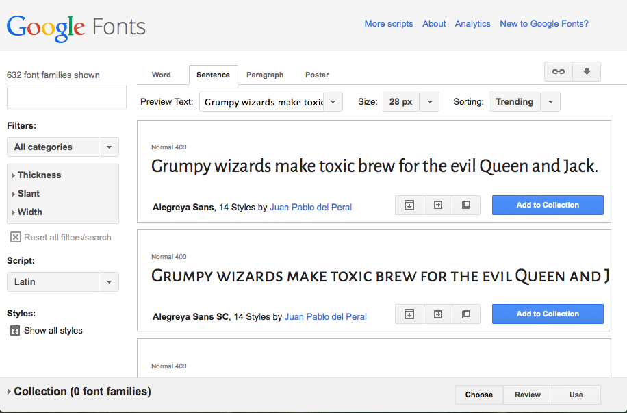

There are a lot of ways to make your web pages look cool using CSS, and in this part of the course I'll explain a few of the simpler ones. You are probably dying to find out how to set different cool looking fonts on your pages, drop shadows, and nice looking backgrounds for your content boxes. Lets dive in and find out more.
Web fonts
If you look at my example templates (for example, my All about Chris page), you'll notice some interesting fonts, whereas the default Thimble page has an altogether more ... um ... boring font. What gives? How can we spice our fonts?
To start with lets look at the CSS that controls fonts. In a new Thimble page, create a style element inside the HTML head like we did before, and add the following CSS:
p {
font-family: arial;
}When this is added, you will notice that the font changes. This is because we have specified a different font family for the font. A font family is collection of different font variants, for example a font, plus its bold and italic versions. Don't worry too much about this for now.
Now try changing the p selector to an html selector. You'll not notice much difference. This is because the html element's font setting is inherited by all its child elements. Try adding some example elements (headings and paragraphs will be fine) to the HTML body and you'll see what I mean: all of these elements will take on the same font as the html element.
Now add another CSS ruleset to style one of your heading levels. For example:
h1 {
font-family: 'courier new';
}Note that if the font family name you have chosen has multiple words in it, you need to surround it in quotes.
This is generally how fonts are used on web pages: you set a base font that applies to the entire page, and then override it where you want.
What fonts can we use?
The next thing we need to consider is that you can't just use any font you like anywhere you want, just by using font-family in your CSS. A web page making use of a font on a user's computer requires it to be available on that computer (these are the same fonts that other programs will use, like Microsoft Word for example). Just because a font is available on your computer, doesn't mean that is available on the computers of other people looking at your website.
There is another piece of this puzzle we are missing: @font-face. This is a bit of code that allows you to include your font files along with your web page, so it doesn't have to be available on the user's computer: it can be downloaded along with the other web page files. Now, implementing this yourself is a bit beyond the scope of this course, so we are going to use a simple online service to do most of the work for us: Google Fonts. Let's do it!
- Open your project in one tab, and Google fonts in another tab
In the Google Fonts page you have a list of fonts, and you can adjust the options
- Look through the list of fonts, and find two or three that you like the look of, and might to use on your project. For each one, click the Add to collection button.
- When you are done choosing, click the Use button near the bottom of the page.
- Now you are given the code you need to get your font choices onto your page. First of all, you need to made the fonts available on your page, using the line of code seen in step 3 of the Use panel into your page. Copy this line now.
- Paste the line just above your opening
<style>tag. It is important to put this before your CSS, as the fonts need to be available on the page before you use them (HTML code is run in order from start to finish.) - Now take the lines shown in step 4 on the Google Fonts page and put them on the elements you want your fonts applied to. If you want to use a font as your base or sitewide font, you would do this:
- For a more specific font, you would do something like this:
<link href='http://fonts.googleapis.com/css?family=Alegreya+Sans'
rel='stylesheet' type='text/css'>html {
font-family: 'Alegreya Sans', sans-serif;
}h1 {
font-family: 'Alegreya Sans', sans-serif;
}That's about it for fonts in this course! You can find a lot more out at the MDN font page, and Cross browser web fonts part 1.
Backgrounds
With fonts covered briefly, let's now turn our attention to setting backgrounds in CSS. We've already looked at the simplest part of this: background-color, which allows us to set a single colour to cover the whole of an element's background. Lets now look at a few more of the available options.
Background images
We've already inserted images into our pages with the <img> element; we can also insert images in our pages using the CSS background-image property, which looks like this:
p {
background-image: url(http://www.location/of/my/image.png);
}You can find an image in the same way as we did in week 4. Try using the above property in your project. Find an image, and insert it as a background image into an element, or elements, on your page.
You'll notice that there are some differences between the way HTML and CSS images work. HTML images take up space in their own right, and you only get one image inserted per img element. CSS background images on the other hand do not take up space in their own right. They exist in the background of other elements. And by default, they will repeat endlessly until the whole of the image background is filled up.
A very common technique is to use a seamless repeating image tile to create a nice looking background. If you search for something like "repeating background tile", you should find many suitable images to do this with. Lets try this now before we move on.
Background repeat
In some situations, you don't want to repeat your image; you might just want it to repeat horizontally or vertically, or not at all. The CSS background-repeat property allows you to control this, and takes one of four values:
repeat: The default if no value is specified. The image repeats in both directions.no-repeat: The image doesn't repeat at all: it is only shown once.repeat-x: The image is repeated horizontally, but not vertically.repeat-y: The image is repeated vertically, but not horizontally.
Background position
Another issue when you are just showing an image once is that by default it will appear in the top left corner of the element you put it on. But never fear: you can change where it sits using the background-position property. This can take a couple of different types of values, and generally you need to put two items in the value: a value for the horizontal value and the vertical value.
- For a start, you can use keyword values, which place the image in very specific places; the horizontal item can have a value of
left,centerorright, and the vertical item can have a value oftop,centerorbottom. So for example, to put the image at the bottom right of the element, you would usebackground-position: right bottom;. - Second, you can use CSS length units to give much more specific control over the image position. So for example, you could use pixel values to put the image a specific number of pixels from the top left corner of the element (e.g.
background-position: 100px 200px;), or percentages to put the image a percentage of the element's width and height across and down from the top left corner ((e.g.background-position: 50% 30%;)) - You can also mix the keywords and CSS length unit values, for example
background-position: 100px bottom;
ADVANCED: shorthand
Just like you've seen with elements like border and padding, you can also use a shorthand value to replace all the different background-* properties: background. Instead of writing:
background-color: red;
background-image: url(http://www.clker.com/cliparts/v/R/d/R/l/c/
decorative-corner-design-md.png);
background-repeat: no-repeat;
background-position: right top;You could just write:
background: red url(http://www.clker.com/cliparts/v/R/d/R/l/c/
decorative-corner-design-md.png)
no-repeat right top;ADVANCED: Drop shadows
CSS provides a mechanism to put drop shadows on your text and boxes. This is a bit more tricky to work out, but can create some fun effects.
text-shadow: This allows you to put a funky drop shadow on the text of your element, for example text-shadow: 2px 2px 5px black;. The four items in the value are:
- The horizontal offset of the shadow from the original text (how far it moves over to the right.)
- The vertical offset of the shadow from the original text (how far it moves toward the bottom.)
- The blur radius of the shadow. This means how blurry it is; a bigger number will give more blur, while 1px will give a solid shadow (no blur.)
- The base colour of the shadow.
box-shadow: This allows you to put a funky drop shadow on the your whole element, for example box-shadow: 2px 2px 5px black;. The four items in the value are:
- The horizontal offset of the shadow from the original box (how far it moves over to the right.)
- The vertical offset of the shadow from the original box (how far it moves toward the bottom.)
- The blur radius of the shadow. This means how blurry it is; a bigger number will give more blur, while 1px will give a solid shadow (no blur.)
- The base colour of the shadow.